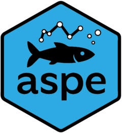

Ajouter à un dataframe de présences les lignes des absences (avec effectif et densité nuls)
Source:R/mef_ajouter_abs.R
mef_ajouter_abs.RdLa fonction fait appel au dataframe "operation" de la base Aspe qui doit impérativement avoir été chargé auparavant.
Arguments
- df
Dataframe avec les variables ope_id, esp_code_alternatif, effectif, dens_ind_1000m2 et annee.
- var_id
Nom de la variable contenant les identifiants des observations (ex : ope_id), sans guillements.
- var_taxon
Nom de la variable contenant les identifiants des taxons (ex : esp_code_alternatif), sans guillements.
- var_effectif
Nom de la variable contenant les effectifs (ex : lop_effectif), sans guillements.